UT 7 - Manipulación y validación de datos
Resultados de aprendizaje y criterios de evaluacion que se evaluarán en esta unidad.
| RA6. Escribe programas que manipulen información, seleccionando y utilizando tipos avanzados de datos. |
|---|
| c) Se han utilizado listas para almacenar y procesar información. |
| f) Se han creado clases y métodos genéricos. |
| g) Se han utilizado expresiones regulares en la búsqueda de patrones en cadenas de texto. |
| i) Se han realizado programas que realicen manipulaciones sobre documentos escritos en diferentes lenguajes de intercambio de datos. |
| j) Se han utilizado operaciones agregadas para el manejo de información almacenada en colecciones. |
1 - Estructuras de datos en Python
1.1 - Tipos de colecciones de datos
En unidades anteriores hemos ido utilizando estructuras de datos (listas, diccionarios, tuplas, etc.) para almacenar y manipular datos en nuestros programas. En esta sección repasaremos las diferentes estructuras de datos (también llamadas colecciones) disponibles en Python y veremos cómo utilizarlas de manera efectiva.
-
Listas: Son colecciones ordenadas y mutables que pueden contener elementos de diferentes tipos. Se definen utilizando corchetes
[]. Las listas permiten agregar, eliminar y modificar elementos fácilmente. -
Tuplas: Son colecciones ordenadas e inmutables que también pueden contener elementos de diferentes tipos. Se definen utilizando paréntesis
(). Una vez creada una tupla, no se pueden modificar sus elementos. - Conjuntos: Son colecciones no ordenadas y mutables que no permiten elementos duplicados. Se definen utilizando llaves
{}o la funciónset(). - Diccionarios: Son colecciones mutables que almacenan pares clave-valor. Desde Python 3.7 mantienen el orden de inserción. Se definen utilizando llaves
{}con pares separados por dos puntos:.
Cada una de estas estructuras de datos tiene sus propias características y ventajas, y la elección de cuál utilizar depende del tipo de datos que se estén manejando y de las operaciones que se necesiten realizar sobre ellos.
1.2 - Métodos asociados a las listas
1.2.1 - Método .append()
El método append() se utiliza para agregar un elemento al final de una lista.
# Ejemplo de uso de append()
mi_lista = [1, 2, 3]
mi_lista.append(4)
print(mi_lista) # Salida: [1, 2, 3, 4]
También se puede añadir elementos a una lista utilizando el operador += pero, no se considera una buena práctica para añadir un solo elemento, ya que += está pensado para concatenar listas completas.
1.2.2 - Método .insert()
El método insert() permite insertar un elemento en una posición específica de la lista.
# Ejemplo de uso de insert()
# Insertar el número 10 en la posición 1
mi_lista = [1, 2, 3]
mi_lista.insert(1, 10)
print(mi_lista) # Salida: [1, 10, 2, 3]
1.2.3 - Método .del()
El método del permite eliminar un elemento de una lista en una posición específica.
# Ejemplo de uso de del
mi_lista = [1, 2, 3, 4]
del mi_lista[2] # Elimina el elemento en la posición 2
print(mi_lista) # Salida: [1, 2, 4]
1.2.4 - Método .remove()
Realiza la misma funcion que el métod del() pero, esta vez, en vez de eliminar un elemento en base a su índice, lo hace por su valor.
# Ejemplo de uso de remove()
mi_lista = [1, 2, 3, 4]
mi_lista.remove(3) # Elimina el primer elemento con valor 3
print(mi_lista) # Salida: [1, 2, 4]
Nota: Si el valor aparece varias veces en la lista, solo se eliminará la primera aparición.
mi_lista = [1, 2, 3, 4, 8, 9, 3, 4, 5]
mi_lista.remove(3) # Elimina el primer elemento con valor 3
print(mi_lista) # Salida: [1, 2, 4, 8, 9, 3, 4, 5]
1.2.5 - Método .clear()
El método clear() elimina todos los elementos de una lista, dejándola vacía.
# Ejemplo de uso de clear()
mi_lista = [1, 2, 3, 4]
mi_lista.clear() # Elimina todos los elementos de la lista
print(mi_lista) # Salida: []
1.2.6 - Método .pop()
El método pop() elimina y devuelve un elemento de la lista en una posición específica. Si no se especifica una posición, elimina y devuelve el último elemento de la lista.
# Ejemplo de uso de pop()
mi_lista = [1, 2, 3, 4]
elemento_eliminado = mi_lista.pop(1) # Elimina y devuelve el elemento en la posición 1
print(elemento_eliminado) # Salida: 2
mi_lista = [1, 2, 3, 4]
elemento_eliminado = mi_lista.pop() # Elimina y devuelve el último elemento
print(elemento_eliminado) # Salida: 4
1.2.7 - Método .sort()
El método sort() ordena los elementos de una lista modificando la lista original. Por defecto, ordena los elementos en orden ascendente.
# Ejemplo de uso de sort()
mi_lista = [4, 2, 1, 3]
mi_lista.sort() # Ordena la lista en orden ascendente
print(mi_lista) # Salida: [1, 2, 3, 4]
Nota 1: También se puede ordenar en orden descendente utilizando el argumento reverse=True o usando el método .reverse().
mi_lista = [1, 2, 3, 4]
mi_lista.sort(reverse=True) # Ordena la lista en orden descendente
print(mi_lista) # Salida: [4, 3, 2, 1]
mi_lista = [4, 2, 1, 3]
milista.reverse() # Invierte el orden de los elementos de la lista
print(mi_lista) # Salida: [3, 1, 2, 4]
Nota 2: Si no se desea modificar la lista original, se puede utilizar la función sorted(), que devuelve una nueva lista ordenada.
mi_lista = [4, 2, 1, 3]
lista_ordenada = sorted(mi_lista) # Devuelve una nueva lista ordenada
print(lista_ordenada) # Salida: [1, 2, 3, 4]
print(mi_lista) # Salida: [4, 2, 1, 3] (la lista original no se modifica)
1.3 - Métodos asociados a los diccionarios
1.3.1 - Método .keys()
El método keys() devuelve una vista de las claves del diccionario.
# Ejemplo de uso de keys()
mi_diccionario = {"nombre": "Juan", "edad": 30, "ciudad": "Catadau"}
claves = mi_diccionario.keys()
print(claves) # Salida: dict_keys(['nombre', 'edad', 'ciudad'])
1.3.2 - Método .values()
El método values() devuelve una vista de los valores del diccionario.
# Ejemplo de uso de values()
mi_diccionario = {"nombre": "Juan", "edad": 30, "ciudad": "Catadau"}
valores = mi_diccionario.values()
print(valores) # Salida: dict_values(['Juan', 30, 'Catadau'])
1.3.3 - Método .items()
El método items() devuelve una vista de los pares clave-valor del diccionario.
# Ejemplo de uso de items()
mi_diccionario = {"nombre": "Juan", "edad": 30, "ciudad": "Catadau"}
pares = mi_diccionario.items()
print(pares) # Salida: dict_items([('nombre', 'Juan'), ('edad', 30), ('ciudad', 'Catadau')])
1.3.4 - Método .get()
El método get() se utiliza para obtener el valor asociado a una clave específica en el diccionario. Si la clave no existe, devuelve None o un valor predeterminado especificado.
# Ejemplo de uso de get()
mi_diccionario = {"nombre": "Juan", "edad": 30, "ciudad": "Catadau"}
valor = mi_diccionario.get("edad") # Obtiene el valor asociado a la clave "edad"
print(valor) # Salida: 30
valor_no_existente = mi_diccionario.get("pais", "No encontrado") # Devuelve un valor predeterminado si la clave no existe
print(valor_no_existente) # Salida: No encontrado
1.3.5 - Añadir, modificar elementos
Para añadir un nuevo par clave-valor o modificar el valor asociado a una clave existente, se puede utilizar la sintaxis de asignación.
# Ejemplo de añadir o modificar elementos
mi_diccionario = {"nombre": "Juan", "edad": 30}
mi_diccionario["ciudad"] = "Catadau" # Añadir un nuevo par clave-valor
mi_diccionario["edad"] = 31 # Modificar el valor asociado a la clave "edad"
print(mi_diccionario) # Salida: {'nombre': 'Juan', 'edad': 31, 'ciudad': 'Catadau'}
También se puede utilizar el método update() para añadir o modificar múltiples pares clave-valor a la vez.
# Ejemplo de uso de update()
mi_diccionario = {"nombre": "Juan", "edad": 30}
mi_diccionario.update({"ciudad": "Catadau", "edad": 31}) # Añadir/modificar múltiples pares clave-valor
print(mi_diccionario) # Salida: {'nombre': 'Juan', 'edad': 31, 'ciudad': 'Catadau'}
No se puede cambiar una clave existente, pero se puede eliminar el par clave-valor y añadir uno nuevo con la clave deseada. El método pop() resulta particularmente útil para este propósito
# Ejemplo de cambio de clave en diccionarios
mi_diccionario = {"nombre": "Juan", "edad": 30, "ciudad": "Catadau"}
valor_edad = mi_diccionario.pop("edad") # Elimina el par clave-valor con clave "edad"
mi_diccionario["años"] = valor_edad # Añade un nuevo par clave-valor con la nueva clave "años"
print(mi_diccionario) # Salida: {'nombre': 'Juan', 'ciudad': 'Catadau', 'años': 30}
1.4 - Métodos asociados a las tuplas
Las tuplas son inmutables, por lo que no tienen métodos para modificar su contenido. Sin embargo, tienen algunos métodos útiles:
1.4.1 - Método .count()
El método count() devuelve el número de veces que un elemento aparece en la tupla.
# Ejemplo de uso de count()
mi_tupla = (1, 2, 3, 2, 4, 2)
veces = mi_tupla.count(2) # Cuenta cuántas veces aparece el número 2
print(veces) # Salida: 3
¿Disponen las listas del método count()?
1.4.2 - Método .index()
El método index() devuelve el índice de la primera aparición de un elemento en la tupla.
# Ejemplo de uso de index()
mi_tupla = (1, 2, 3, 4)
indice = mi_tupla.index(3) # Obtiene el índice del número
print(indice) # Salida: 2
1.5 - Métodos asociados a los conjuntos
1.5.1 - Método .add()
El método add() se utiliza para agregar un elemento a un conjunto.
# Ejemplo de uso de add()
mi_conjunto = {1, 2, 3}
mi_conjunto.add(4) # Agrega el elemento 4 al conjunto
print(mi_conjunto) # Salida: {1, 2, 3, 4}
¿Qué ocurrirá si hago un .add(3) sobre el ejemplo anterior?
1.5.2 - Método .remove()
El método remove() se utiliza para eliminar un elemento específico de un conjunto. Si el elemento no existe, se genera un error.
# Ejemplo de uso de remove()
mi_conjunto = {1, 2, 3, 4}
mi_conjunto.remove(3) # Elimina el elemento 3 del conjunto
print(mi_conjunto) # Salida: {1, 2, 4}
1.5.3 - Método .discard()
El método discard() también se utiliza para eliminar un elemento específico de un conjunto, pero a diferencia de remove(), no genera un error si el elemento no existe.
# Ejemplo de uso de discard()
mi_conjunto = {1, 2, 3, 4}
mi_conjunto.discard(5) # Intenta eliminar el elemento 5 (no existe, pero no genera error)
print(mi_conjunto) # Salida: {1, 2, 3, 4}
1.5.4 - Método .pop()
El método pop() elimina y devuelve un elemento arbitrario del conjunto. Si el conjunto está vacío, genera un error.
# Ejemplo de uso de pop()
mi_conjunto = {1, 2, 3, 4}
elemento_eliminado = mi_conjunto.pop() # Elimina y devuelve un elemento arbitrario
print(elemento_eliminado) # Salida: (puede ser cualquier elemento del conjunto)
print(mi_conjunto) # Salida: (el conjunto sin el elemento eliminado)
1.5.5 - Método .clear()
El método clear() elimina todos los elementos de un conjunto, dejándolo vacío.
# Ejemplo de uso de clear()
mi_conjunto = {1, 2, 3, 4}
mi_conjunto.clear() # Elimina todos los elementos del conjunto
print(mi_conjunto) # Salida: set()
1.6 - Accesso a elementos de las colecciones
1.6.1 - Acceso a elementos en listas y tuplas
Se puede acceder a los elementos de una lista o tupla utilizando índices. Los índices comienzan en 0 para el primer elemento, 1 para el segundo, y así sucesivamente. También se pueden utilizar índices negativos para acceder a los elementos desde el final de la colección.
# Ejemplo de acceso a elementos en listas y tuplas
mi_lista = [10, 20, 30, 40, 50]
primer_elemento = mi_lista[0] # Accede al primer elemento (10)
ultimo_elemento = mi_lista[-1] # Accede al último elemento (50)
print(primer_elemento) # Salida: 10
print(ultimo_elemento) # Salida: 50
Al igual que podemos acceder a los elementos individuales de una lista o tupla utilizando índices, también podemos modificar los elementos de una lista utilizando índices (no es posible hacerlo con las tuplas al ser inmutables).
# Ejemplo de modificación de elementos en listas
mi_lista = [10, 20, 30, 40, 50]
mi_lista[2] = 35 # Modifica el tercer elemento (índice 2) a 35
print(mi_lista) # Salida: [10, 20, 35, 40, 50]
1.6.2 - Acceso a elementos en diccionarios
Se puede acceder a los valores de un diccionario utilizando sus claves.
# Ejemplo de acceso a elementos en diccionarios
mi_diccionario = {"nombre": "Juan", "edad": 30, "ciudad": "Catadau"}
nombre = mi_diccionario["nombre"] # Accede al valor asociado a la clave "nombre"
print(nombre) # Salida: Juan
1.6.3 - Acceso a elementos en conjuntos
Los conjuntos no permiten acceso a elementos individuales mediante índices, ya que son colecciones no ordenadas. Sin embargo, se puede verificar la existencia de un elemento en un conjunto utilizando el operador in.
# Ejemplo de acceso a elementos en conjuntos
mi_conjunto = {1, 2, 3, 4}
existe = 3 in mi_conjunto # Verifica si el elemento 3 está en el conjunto
print(existe) # Salida: True
1.6.4 - Slicing
El slicing permite obtener una sublista o subtupla de una lista o tupla original, especificando un rango de índices.
# Ejemplo de slicing
mi_lista = [10, 20, 30, 40, 50]
sublista = mi_lista[1:4] # Obtiene los elementos desde el índice 1 hasta el 3 (4 no incluido)
print(sublista) # Salida: [20, 30, 40]
¿Qué ocurrirá si hago un slicing de tipo mi_lista[2:] o mi_lista[:3]?
1.6.5 - Iteración sobre colecciones
Se puede iterar sobre los elementos de cualquier colección utilizando un bucle for.
# Ejemplo de iteración sobre una lista
mi_lista = [10, 20, 30, 40, 50]
for elemento in mi_lista:
print(elemento)
1.6.6 - Comprensión de listas
La comprensión de listas (list comprehensions) es una forma concisa de crear listas utilizando una sintaxis especial.
# Ejemplo de comprensión de listas
mi_lista = [1, 2, 3, 4, 5]
cuadrados = [x**2 for x in mi_lista] # Crea una nueva lista con los cuadrados de los elementos
print(cuadrados) # Salida: [1, 4, 9, 16, 25]
1.6.7 - Funciones agregadas para colecciones
Python proporciona varias funciones integradas que permiten realizar operaciones agregadas sobre colecciones, como len(), sum(), min(), max(), entre otras.
# Ejemplo de funciones agregadas
mi_lista = [10, 20, 30, 40, 50]
longitud = len(mi_lista) # Obtiene la longitud de la lista
suma = sum(mi_lista) # Calcula la suma de los elementos de la lista
minimo = min(mi_lista) # Obtiene el valor mínimo de la lista
maximo = max(mi_lista) # Obtiene el valor máximo de la lista
print(longitud) # Salida: 5
print(suma) # Salida: 150
print(minimo) # Salida: 10
print(maximo) # Salida: 50
1.7 - Tarea RA6-CEc
Ejercicio 1
La secuencia de Fibonacci está definida por:
x0 = 0, x1 = 1, xn+1 = xn + xn-1
Escribir un programa que haga lo siguiente:
- Llenar una lista con 16 elementos.
- Devolver la suma de los 16 elementos.
Ejemplo de secuencia de Fibonacci: [0,1,1,2,3,5,...]
Ejercicio 2
Realizar un programa que inicialice una lista con 10 valores aleatorios (del 1 al 10) y posteriormente haga lo siguiente:
- Mostrar en pantalla cada elemento de la lista junto con su cuadrado y su cubo.
- Mostrar en pantalla el valor máximo de la lista.
- Mostrar en pantalla el valor mínimo de la lista.
- Mostrar en pantalla el valor medio de los valores con índice 3 a 7 de la lista.
Nota: Para generar los números aleatorios utilizar el módulo Random.
Ejercicio 3
Realizar un programa que haga lo siguiente:
- Crear una tabla (lista con dos dimensiones) de 5x5 enteros aleatorios comprendidos entre 0 y 9.
- Suma todos los elementos de cada fila y todos los elementos de cada columna visualizando los resultados en pantalla.
1.8 - Colecciones genéricas
Python permite crear clases y métodos genéricos utilizando el módulo typing, que proporciona herramientas para definir tipos genéricos.
from typing import TypeVar, Generic, List
T = TypeVar('T')
class Caja(Generic[T]):
def __init__(self):
self.elementos: List[T] = []
def agregar(self, elemento: T) -> None:
self.elementos.append(elemento)
def obtener_elementos(self) -> List[T]:
return self.elementos
# Ejemplo de uso de la clase genérica Caja
caja_de_enteros = Caja[int]()
caja_de_enteros.agregar(1)
caja_de_enteros.agregar(2)
print(caja_de_enteros.obtener_elementos()) # Salida: [1, 2]
caja_de_cadenas = Caja[str]()
caja_de_cadenas.agregar("Hola")
caja_de_cadenas.agregar("Mundo")
print(caja_de_cadenas.obtener_elementos()) # Salida: ['Hola', 'Mundo']
1.9 - Generadores
- Los generadores son una forma especial de iteradores que extraen los valores de uno en uno en lugar de almacenar todos los valores en memoria.
- Hasta que no se solicite otro valor, el generador se mantiene pausado. Esta característica se conoce como suspensión de estado.
- El generador se define utilizando la palabra clave
yielden lugar dereturndentro de una función. Cada vez que se llama al generador, este produce el siguiente valor en la secuencia y mantiene su estado para la próxima llamada. - Para realizar la iteración sobre un generador, se puede utilizar un bucle
foro la funciónnext().
# Declarar el generador
def generador_numeros_pares(num):
for i in range(num):
yield i*2
# Instanciar el generador
numeros_pares = generador_numeros_pares(5)
...
## Llamada 1 al generador
print(f"Llamada 1 al generador que extrae el valor: {next(numeros_pares)}")
...
## Llamada 2 al generador
print(f"Llamada 2 al generador que extrae el valor: {next(numeros_pares)}")
...
## Llamada 3 al generador
print(f"Llamada 3 al generador que extrae el valor: {next(numeros_pares)}")
...
yield from
También se puede utilizar yield from para delegar parte de la generación a otro generador o iterable. Este es particularmente útil para combinar múltiples generadores.
def generador_numeros_pares(num):
for i in range(num):
yield i*2
def generador_letras():
yield "a"
yield "b"
yield "c"
yield "d"
def generador_principal():
yield from generador_numeros_pares(5)
yield from generador_letras()
# Usar el generador principal
generador = generador_principal()
for valor in generador:
print(valor)
Tendremos que tener en cuenta que yield from se comporta como un bucle for que itera sobre el iterable proporcionado, extrayendo cada valor y cediéndolo al llamador del generador principal.
# código sin yield from
def devuelve_ciudades(*ciudades):
for ciudad in ciudades:
for letras in ciudad:
yield letras
ciudades_generadas = devuelve_ciudades("Llombay", "Catadau", "Alfarp")
for letras in range(20):
print(next(ciudades_generadas), end="_")
#########################################
# código CON yield from
def devuelve_ciudades(*ciudades):
for ciudad in ciudades:
yield from ciudad
ciudades_generadas = devuelve_ciudades("Llombay", "Catadau", "Alfarp")
for letras in range(20):
print(next(ciudades_generadas), end="_")
1.10 - Funciones avanzadas para el tratamiento de datos
Las funciones, map, filter y list son funciones de orden superior que permiten aplicar un enfoque funcional al procesamiento de colecciones, especialmente listas.
Son herramientas clásicas para transformar y filtrar datos sin necesidad de escribir bucles explícitos, lo que favorece código más declarativo y expresivo.
1.10.1 - Función map()
La función map() aplica una función específica a cada elemento de un iterable (como una lista o una tupla) y devuelve un iterador con los resultados.
# Ejemplo de uso de map()
def cuadrado(x):
return x ** 2
numeros = [1, 2, 3, 4, 5]
resultados = map(cuadrado, numeros) # Aplica la función cuadrado a cada elemento de la lista numeros
print(list(resultados)) # Salida: [1, 4, 9, 16, 25]
1.10.2 - Función filter()
La función filter() filtra los elementos de un iterable basándose en una función que devuelve un valor booleano (True o False). Devuelve un iterador con los elementos que cumplen la condición.
# Ejemplo de uso de filter()
def es_par(x):
return x % 2 == 0
numeros = [1, 2, 3, 4, 5, 6]
resultados = filter(es_par, numeros) # Filtra los números pares de la lista
print(list(resultados)) # Salida: [2, 4, 6]
1.10.3 - Función list()
La funcion list() convierte cualquier objeto iterable en una lista. Es útil para convertir los resultados de funciones como map() y filter() en listas.
# list sobre un tupla
numeros = (1, 2, 3, 4, 5) # Tupla
lista_numeros = list(numeros) # Convierte la tupla en una lista
print(lista_numeros) # Salida: [1, 2, 3, 4, 5]
# list sobre un string
list("hola")
# ['h', 'o', 'l', 'a']
# list sobre un rango
list(range(5))
# [0, 1, 2, 3, 4]
1.10.4 - Tarea RA6-CEj
Ejercicio 1
Realizar un programa que haga lo siguiente:
- Crear una lista con los números del 1 al 20.
- Utilizando la función
map(), crear una nueva lista con los cuadrados de los números de la lista original. - Utilizando la función
filter(), crear una nueva lista que contenga solo los números pares de la lista original. - Mostrar en pantalla las tres listas generadas.
Ejercicio 2
Realizar un programa que haga lo siguiente:
- Crea un conjunto llamado usuarios con los usuarios Marta, David, Elvira, Juan y Marcos
- Crea un conjunto llamado administradores con los administradores Juan y Marta.
- Borra al administrador Juan del conjunto de administradores.
- Añade a Marcos como un nuevo administrador, pero no lo borres del conjunto de usuarios.
- Muestra todos los usuarios por pantalla de forma dinámica, además debes indicar si cada usuario es administrador o no.
Ejercicio 3
Realizar un programa que haga lo siguiente:
- Crea una lista contenga 5 números aleatorios (de cualquier tipo).
- Define una función generadora que reciba la lista anterior como parámetro.
- La función generadora devolverá, uno a uno, el cuadrado de cada número de la lista utilizando la instrucción yield.
- Crear una variable que almacene el generador devuelto por la función.
- Recorrer el generador utilizando un bucle for y muestre por pantalla el cuadrado de cada número.
1.10.5 - Expresiones regulares
Las expresiones regulares (regular expressions / regex / parsing) permiten buscar o manipular cadenas de texto basándose en patrones específicos.
En Python, el módulo re proporciona funciones para trabajar con expresiones regulares. Resulta muy útil para validar formatos de datos, como correos electrónicos, números de teléfono, códigos postales, etc.
Ejemplo:
import re
# Ejemplo de uso de expresiones regulares
patron = r'\b\d{3}-\d{2}-\d{4}\b' # Patrón para un número de seguro social (SSN)
texto = "Mi número de seguro social es 123-45-6789."
coincidencias = re.findall(patron, texto) # Busca todas las coincidencias del patrón en el texto
print(coincidencias) # Salida: ['123-45-6789']
Sintaxis básica de expresiones regulares
Una expresión regular es una secuencia de caracteres diseñada para describir un fragmento de texto. Esta secuencia de caracteres también se denomina patrón y consta de dos tipos de caracteres:
- Caracteres normales: Son aquellos que se representan a sí mismos en el patrón. Por ejemplo, la letra "a" en una expresión regular coincide con la letra "a" en el texto.
- Metacaracteres: Son caracteres especiales que tienen un significado particular en las expresiones regulares. Por ejemplo, el carácter
^indica el comienzo de una nueva línea o de una cadena de caracteres.
Tabla de metacaracteres y significado
| Símbolo | Nombre / Uso principal | Significado |
|---|---|---|
^ |
Ancla de inicio | Indica el inicio de la cadena |
$ |
Ancla de fin | Indica el final de la cadena |
. |
Punto | Coincide con cualquier carácter, excepto salto de línea (\n) |
[] |
Clase de caracteres | Coincide con uno de los caracteres definidos dentro del [ ] |
\ |
Escape | Escapa un metacarácter o introduce una secuencia especial |
* |
Cero o más | Coincide con cero o más repeticiones del elemento anterior o expresión entre paréntesis |
+ |
Uno o más | Coincide con una o más repeticiones del elemento anterior o expresión entre paréntesis |
? |
Opcional / cuantificador no codicioso | Coincide con cero o una repetición del elemento anterior o expresión entre paréntesis |
{} |
Cuantificador explícito | Define un número exacto o rango de repeticiones ({n}, {n,m}) del elemento anterior o expresión entre paréntesis |
() |
Grupo | Agrupa expresiones y permite capturas |
| |
Alternancia | Actúa como un OR lógico |
Secuencias especiales
El módulo re de Python también proporciona secuencias especiales que facilitan la coincidencia de ciertos tipos de caracteres:
| Secuencia | Significado | Equivalente al metacarácter |
|---|---|---|
\b |
Coincide con un límite de palabra (inicio o fin de una palabra) | N/A |
\B |
Coincide con una posición que no es un límite de palabra | N/A |
\d |
Coincide con cualquier dígito (0-9) | \[0-9] |
\D |
Coincide con cualquier carácter que no sea un dígito | \[^0-9] |
\w |
Coincide con cualquier carácter alfanumérico (letras, dígitos y guion bajo) | [a-zA-Z0-9_] |
\W |
Coincide con cualquier carácter que no sea alfanumérico | [^a-zA-Z0-9_] |
\s |
Coincide con cualquier carácter de espacio en blanco excepto un espacio en blanco '_' (tabulador, salto de línea, retorno de carro, salto de página y tabulador vertical) | [\t\n\r\f\v] |
\S |
Coincide con cualquier carácter que no sea un espacio en blanco | [^\t\n\r\f\v] |
Metacarácter ^
- La regex ^ATG se encuentra en la cadena
ATGCGTpero no enCCATGTT.
Metacarácter $
- La regex $ATG se encuentra en la cadena
TGCATGpero no enCCATGTT.
Metacarácter .
- La regex $A.G se encuentra en la cadena
ATGy también enAtG,AtG,A5G,A*G,A&GyA G.
Metacarácter []
- La regex T[ABC]G se encuentra en la cadena
TAG,TBGoTCGpero no enTG,TaG,T5G, ...
Otros ejemplos: - regex T[A-Z]G: cualquier letra en mayúsculas, se encuentra en la cadena
TAG,TBGoTZGpero no enTaG,T4G,TzG, ... - regex [a-z]: cualquier letra en minúsculas.
- regex [0-9]: cualquier número del 0 al 9.
- regex [A-Za-z0-9]: cualquier carácter alfanumérico.
- regex ^[AC]: cualquier expresión o cadena cuyo primer carácter empiece con A o C.
Metacarácter \
El metacarácter de escape \ se utiliza para indicar que el siguiente carácter debe interpretarse literalmente o para introducir secuencias especiales.
- La regex \d{3} se encuentra en
123,456,789pero no en12A,AB3, ... - La regex + designa el carácter
+(o cualquier otro carácter especial). Se encuentra enA+B,C+Dpero no enAB,A4B, ... - La regex
A\.Gse encuentra enA.Gpero no enAG,A4G,ABG, ...
Metacarácter *
- La regex
A(CG)*Tse encuentra enAT,ACGT,ACGCGT, ...
Metacarácter +
- La regex
A(CG)+Tse encuentra enACGT,ACGCGT, ... pero no enAT.
Metacarácter ?
- La regex
A(CG)?Tse encuentra enAT,ACGT, pero no enACGCGT.
Metacarácter {}
- La regex
A(CG){2}Tse encuentra enACGCGT, pero no enACGT,ACGCGCGToACGCG. Otros ejemplos: - La regex
A(CG){2,4}T(rango) se encuentra enACGCGT,ACGCGCGT,ACGCGCGCGTpero no enACGT,ACGCGCGCGCGToACGCG. - La regex
A(CG){2,}T(al menos) se encuentra enACGCGT,ACGCGCGT,ACGCGCGCGT, ... pero no enACGT, oACGCG. - La regex
A(CG){,2}T(como mucho) se encuentra enAT,ACGT,ACGCGT, ... pero no enACGCGCGT, oACG. - La regex
A(CG|TT)C(O lógico) se encuentra enACGC,ATTCpero no enACGTTC.
1.10.6 - Ejercicios de regex
Ejercicio 1
¿A qué corresponde el regex?
¿Coincide con "HELLO", "Hello", "WORLD", "HELLOWORD" o "helloWORD" ?Ejercicio 2
¿A qué corresponde el regex?
¿Coincide con "3.14", "-100", "+0.5", "abc" o "12."?Ejercicio 3
¿A qué corresponde el regex?
Ejercicio 4
¿A qué corresponde el regex?
1.10.7 - Módulo re
El módulo re proporciona varias funciones para trabajar con expresiones regulares, como match(), search(), findall(), sub(), entre otras.
1.10.7.1 - Función search()
La función search() busca una coincidencia del patrón en cualquier parte de la cadena.
import re
# Ejemplo de uso de search()
patron = r'[0-9]{3}-[0-9]{2}-[0-9]{4}' # Patrón
# patron = r'\d{3}-\d{2}-\d{4}' # Mismo patrón con secuencias especiales
texto = "Mi número de seguro social es 123-45-6789."
coincidencia = re.search(patron, texto) # Busca la primera coincidencia
if coincidencia:
print("Coincidencia encontrada:", coincidencia.group()) # group() recupera el texto que ha coincidido
else:
print("No se encontró ninguna coincidencia.")
1.10.7.2 - Funciones match() y fullmatch()
La función match() busca una coincidencia del patrón al comienzo de la cadena, mientras que fullmatch() busca una coincidencia total que abarque toda la cadena.
import re
# Ejemplo de uso de match() y fullmatch()
patron = r'\d{3}-\d{2}-\d{4}' # Patrón
texto1 = "123-45-6789 es mi número de seguro social."
texto2 = "Mi número de seguro social es 123-45-6789."
coincidencia_match = re.match(patron, texto1) # Busca coincidencia al comienzo
coincidencia_fullmatch = re.fullmatch(patron, texto2) # Busca coincidencia en toda la cadena
if coincidencia_match:
print("Coincidencia match encontrada:", coincidencia_match.group())
else:
print("No se encontró ninguna coincidencia con match.")
if coincidencia_fullmatch:
print("Coincidencia fullmatch encontrada:", coincidencia_fullmatch.group())
else:
print("No se encontró ninguna coincidencia con fullmatch.")
1.10.7.3 - Funciones findall() y finditer()
La función findall() devuelve una lista de todas las coincidencias del patrón en la cadena, mientras que finditer() devuelve un iterador que produce objetos de coincidencia para cada coincidencia encontrada.
import re
# Ejemplo de uso de findall() y finditer()
patron = r'\d{3}-\d{2}-\d{4}' # Patrón
texto = "Mis números de seguro social son 123-45-6789 y 987-65-4321."
coincidencias_findall = re.findall(patron, texto) # Devuelve una lista de todas las coincidencias
coincidencias_finditer = re.finditer(patron, texto) # Devuelve un iterador de objetos de coincidencia
print("Coincidencias con findall:", coincidencias_findall)
print(coincidencias_finditer)
iteraciones =["Primera iteración: ","Segunda iteración: "]
iterador=0
for coincidencia in coincidencias_finditer:
print(iteraciones[iterador], coincidencia.group())
iterador += 1
1.10.7.4 - Función compile()
La función compile() compila un patrón de expresión regular en un objeto de expresión regular, que se puede reutilizar para realizar múltiples búsquedas.
import re
# Ejemplo de uso de compile()
patron = r'\d{3}-\d{2}-\d{4}' # Patrón
regex = re.compile(patron) # Compila el patrón en un objeto regex
texto = "Mis números de seguro social son 123-45-6789 y 987-65-4321."
coincidencias = regex.findall(texto) # Usa el objeto regex para buscar coincidencias
print("Coincidencias encontradas:", coincidencias) # Salida: ['123-45-6789', '987-65-4321']
1.10.7.5 - Función group()
La función group() se utiliza para recuperar el texto que ha coincidido con el patrón en una búsqueda.
import re
# Ejemplo de uso de group()
patron = r'(\d{3})-(\d{2})-(\d{4})' # Patrón con grupos
texto = "Mi número de seguro social es 123-45-6789."
coincidencia = re.search(patron, texto) # Busca la primera coincidencia
print(f"cantidad de coincidencias encontradas: {coincidencia.re.groups}")
if coincidencia:
print("Número completo:", coincidencia.group(0)) # Grupo 0 es el texto completo que coincide
# print("Número completo:", coincidencia.group()) # 0 es el valor por defecto de group()
print("Coincidencia 1 (111):", coincidencia.group(1)) # Primer grupo
print("Coincidencia 2 (11):", coincidencia.group(2)) # Segundo grupo
print("Coincidencia 2 (1111):", coincidencia.group(3)) # Tercer grupo
else:
print("No se encontró ninguna coincidencia.")
1.10.7.6 - Función sub()
La función sub() se utiliza para reemplazar las coincidencias del patrón en una cadena con un texto especificado.
import re
# Ejemplo de uso de sub()
patron = r'\d{3}-\d{2}-\d{4}' # Patrón
texto = "Mi número de seguro social es 123-45-6789."
texto_modificado = re.sub(patron, "ABC-DE-FGHI", texto) # Reemplaza las coincidencias con "ABC-DE-FGHI"
print("Texto modificado:", texto_modificado)
1.10.8 - Tarea RA6-CEg
Tarea RA6-CEg
Realizar un programa que haga lo siguiente:
- Definir una expresión regular para validar direcciones de correo electrónico.
- Solicitar al usuario que ingrese una dirección de correo electrónico mediante interfaz gráfica.
- Utilizar una expresión regular para verificar si la dirección es válida o no.
- Antes de almacenar la dirección dentro de una lista, comprobar si ya existe en la lista una dirección identica.
- Mostrar un mensaje indicando si la dirección es válida o inválida.
- Mostrar un mensaje indicando si la dirección es duplicada o no.
- En caso de fallo volver a pedir introducir la dirección electrónica.
2 - Introducción al análisis de datos
En el capítulo anterior, aprendimos los fundamentos para mover y transformar datos utilizando las estructuras nativas de Python. Sin embargo, cuando nos enfrentamos a volúmenes masivos de información o necesitamos realizar cálculos complejos de forma eficiente, las herramientas estándar pueden quedarse cortas en velocidad y comodidad.
En este capítulo haremos una breve presentación de herramientas para el análisis de datos:
- NumPy (El Motor): Es la biblioteca que permite realizar operaciones matemáticas de alto rendimiento. Su especialidad son los arrays multidimensionales, permitiéndonos realizar cálculos sobre millones de datos casi instantáneamente.
- Pandas (La Estructura): Introduce el concepto de DataFrame (muy similar a una tabla de Excel), permitiéndonos limpiar, filtrar y agrupar datos de manera intuitiva y potente.
- Matplotlib (La Visión): Los datos no sirven de nada si no podemos comunicar lo que dicen. Esta librería es el estándar para crear visualizaciones estáticas, animadas e interactivas que transforman números en conocimiento visual.
2.1 - Anaconda
Anaconda es una distribución de Python y R diseñada para la ciencia de datos y el aprendizaje automático. Proporciona una plataforma fácil de usar que incluye una gran cantidad de paquetes y herramientas útiles para el análisis de datos, la visualización y el desarrollo de modelos de machine learning.
- Instalación de Anaconda:
- Descargar el instalador desde la página oficial.
-
Seguir las instrucciones de instalación para tu sistema operativo (Windows, macOS, Linux).
-
Uso de Anaconda en VSC:
- Abrir Visual Studio Code.
- Instalar la extensión de Python si no está instalada.
- Abrir la paleta de comandos (Ctrl + Shift + P) y seleccionar "Python: Select Interpreter".
- Elegir el intérprete de Anaconda que se instaló previamente.
- Notebook Jupyter:
- En VSC se puede instalar la extensión "Jupyter" para trabajar con notebooks, directamente en el editor.
- Crear un nuevo archivo con extensión .ipynb no .py para comenzar a trabajar con notebooks.
Apariencia de un notebook Jupyter en VSC:
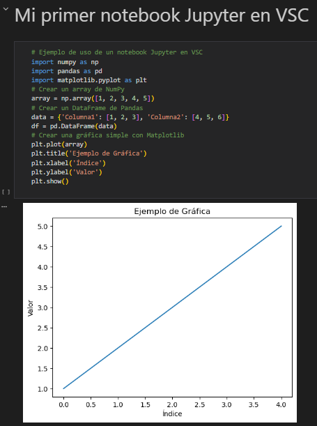
Código del notebook:
# Ejemplo de uso de un notebook Jupyter en VSC
import numpy as np
import pandas as pd
import matplotlib.pyplot as plt
# Crear un array de NumPy
array = np.array([1, 2, 3, 4, 5])
# Crear un DataFrame de Pandas
data = {'Columna1': [1, 2, 3], 'Columna2': [4, 5, 6]}
df = pd.DataFrame(data)
# Crear una gráfica simple con Matplotlib
plt.plot(array)
plt.title('Ejemplo de Gráfica')
plt.xlabel('Índice')
plt.ylabel('Valor')
plt.show()
2.2 - Librería NumPy
Enlaces de interés:
Documentación oficial de NumPy.
2.2.1 - ¿Qué es NumPy?
Numpy es una librería de procesamiento de arrays. Contiene una gran colección de funciones que permiten realizar cálculos matemáticos complejos sobre arrays multidimensionales.
2.2.2 - ¿Qué es un array?
Un array es una estructura de datos que almacena una colección de elementos del mismo tipo en una secuencia contigua de memoria.
A diferencia de las listas (de Python), los arrays de NumPy son más eficientes en términos de rendimiento y uso de memoria, especialmente cuando se trata de grandes conjuntos de datos numéricos.
2.2.3 - Creación de arrays en NumPy
Para crear un array en utilizareos la función np.array().
import numpy as np
# Crear un array de NumPy
array = np.array([1, 2, 3, 4, 5])
print(array) # Salida: [1 2 3 4 5]
A diferencia de las listas que permiten almacenar elementos de diferentes tipos, los arrays de NumPy están diseñados para solo almacenar elementos del mismo tipo. Esto permite optimizar el rendimiento y la eficiencia en el manejo de datos numéricos.
Ejemplo:
import numpy as np
array = np.array(["hola",1,25, 1e10])
array
# array(['hola', '1', '25', '10000000000.0'], dtype='<U32')
Otro ejemplo:
import numpy as np
array = np.array([1,25, 1e10])
print(array)
array.dtype
# Salida: [1.e+00 2.5e+01 1.e+10]
# dtype('float64')
float64 para mantener la coherencia en el tipo de datos del array.
2.2.4 - Creación de arrays básicos
NumPy proporciona varias funciones para crear arrays. A continuación, se muestran algunas de las más comunes:
-
Arrays de ceros (0)
-
Arrays de unos (1)
-
Arrays con un valor dado
-
Auto llenar un array con arange() (1/2)
-
Auto llenar un array con arange() (2/2)
-
Constantes de NumPy
2.2.5 - Dimensiones de los arrays
Los arrays en NumPy pueden tener múltiples dimensiones.
Array unidimensional (1D)
Array bidimensional (2D)
Array tridimensional (3D)
array_3d = array_3d = np.array([[[1, 2, 3], [4, 5, 6], [7, 8, 9]],[[1, 2, 3], [4, 5, 6], [7, 8, 9]],[[1, 2, 3], [4, 5, 6], [7, 8, 9]]])
# array([[[1, 2, 3],
# [4, 5, 6],
# [7, 8, 9]],
#
# [[1, 2, 3],
# [4, 5, 6],
# [7, 8, 9]],
#
# [[1, 2, 3],
# [4, 5, 6],
# [7, 8, 9]]])
2.2.6 - Redimensionar arrays
Los arrays en NumPy se pueden redimensionar fácilmente utilizando el método reshape().
Nota:
reshape() no afecta al array original. Si deseamos redimensionar definitivamente un array deberemos utilizar resize().
import numpy as np
array = np.arange(20)
# Reshape sobre el array pero sin reescribrirlo
print("Visualizar array con reshape()")
print(array.reshape(5,4))
# Aqui podremos ver que el array no ha sido alterado.
print("Visualizar array")
print(array)
# Redifinir el array con resize() y visualizarlo.
print("Visualizar array despues de aplicar resize")
array.resize(2,10)
print(array)
# Visualizar array con reshape()
# [[ 0 1 2 3]
# [ 4 5 6 7]
# [ 8 9 10 11]
# [12 13 14 15]
# [16 17 18 19]]
# Visualizar array
# [ 0 1 2 3 4 5 6 7 8 9 10 11 12 13 14 15 16 17 18 19]
# Visualizar array despues de aplicar resize
# [[ 0 1 2 3 4 5 6 7 8 9]
# [10 11 12 13 14 15 16 17 18 19]]
Otro ejemplo:
array = np.arange(27)
array.reshape(3,3,3)
# array([[[ 0, 1, 2],
# [ 3, 4, 5],
# [ 6, 7, 8]],
#
# [[ 9, 10, 11],
# [12, 13, 14],
# [15, 16, 17]],
#
# [[18, 19, 20],
# [21, 22, 23],
# [24, 25, 26]]])
ndim, shape y size
ndim: Devuelve el número de dimensiones del array.shape: Devuelve una tupla que indica el tamaño de cada dimensión del array.size: Devuelve el número total de elementos en el array.
array = np.arange(12).reshape(3,4)
print(array.ndim) # Salida: 2 (bidimensional)
print(array.shape) # Salida: (3, 4) (3 filas y 4 columnas)
print(array.size) # Salida: 12 (total de elementos)
2.2.7 - Tipos de datos de un array
Como ya hemos dicho, los arrays de NumPy están diseñados para almacenar elementos del mismo tipo. NumPy proporciona una variedad de tipos de datos que se pueden utilizar al crear un array.
Algunos de los tipos de datos más comunes son:
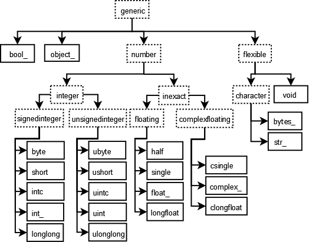
Rangos de los diferentes tipos de datos se puesde consultar en la siguiente tabla:
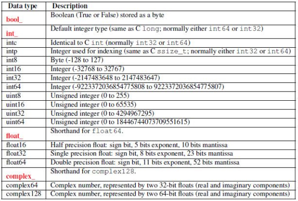
2.2.8 - Acceso a los valores de un array (indexado)
-
Acceso a elementos individuales en array (1D).
-
Acceso a elementos individuales en array (2D).
-
Acceso a elementos individuales en array (3D).
Como acabamos de ver acceder a los elementos de un array multidimensional se hace especificando los índices de cada dimensión y siguiendo la regla array[i,j,k] donde i representa la 3ª dimensión del array, j y k las 2 primeras.
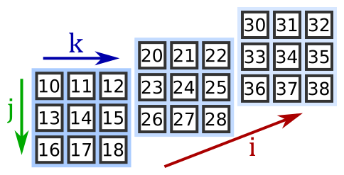
¿Si miramos la figura anterior, qué valor tiene array[1,1,2]?
-
Slicing / acceso a un grupo de calores
-
Acceso a un rango de elementos en array (1D).
-
Acceso a filas completas (2D)
-
Acceso a columnas completas (2D)
Ejercicio
- Tenemos el siguiente array:
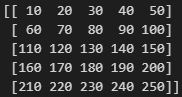
- ¿Qué valores devolverá array[1:,2:4]?"
- ¿Qué valores devolverá array[:2,2:4]?"
-
2.2.9 - Recorido de un array
Para recorrer un array en NumPy, podemos utilizar bucles for anidados para iterar sobre cada dimensión del array.
# Recorrido unidimensional
for numero in vector:
print(numero)
# Recorrido bidimensional
for fila in tabla:
for dato in fila:
print(dato)
# Recorrido tridimensional
for matriz in cubo:
for fila in matriz:
for dato in fila:
print(dato)
Se recomienda utilizar la función np.nditer() para recorrer arrays multidimensionales de manera más eficiente.
array = np.array([[[1,2],[3,4]],[[5,6],[7,8]]])
print(array,"\n")
for valor in np.nditer(array):
print(valor)
# [[[1 2]
# [3 4]]
#
# [[5 6]
# [7 8]]]
#
# 1
# 2
# 3
# 4
# 5
# 6
# 7
# 8
2.2.10 - Atributos de un array
Algunos de los atributos más comunes de los arrays en NumPy son:
- dtype: Devuelve el tipo de datos de los elementos del array.
- ndim: Devuelve el número de dimensiones del array.
- shape: Devuelve una tupla que indica el tamaño de cada dimensión del array.
- size: Devuelve el número total de elementos en el array.
- itemsize: Devuelve el tamaño en bytes de cada elemento del array.
- T: Devuelve la transpuesta del array (intercambia filas y columnas en arrays 2D).
- isinstance(): Permite comprobar si un objeto es una instancia de un tipo específico (por ejemplo, si es un array de NumPy).
import numpy as np
array = np.array([[1, 2, 3], [4, 5, 6]])
print("Tipo de datos:", array.dtype) # Salida: int64 (o int32 dependiendo del sistema)
print("Número de dimensiones:", array.ndim) # Salida: 2
print("Forma del array:", array.shape) # Salida: (2, 3)
print("Tamaño total:", array.size) # Salida: 6
print("Tamaño de cada elemento (bytes):", array.itemsize) # Salida: 8 (o 4 dependiendo del sistema)
print("Transpuesta del array:\n", array.T) # Salida: [[1 4]
# [2 5]
# [3 6]]
2.2.11 - Ejercicios
Ejercicio 1
Declarar un array unidimensional de 10 ceros.
Ejercicio 2
Declarar un array bidimensional de 3 filas y 4 columnas con el valor 1.
Ejercicio 3
Declarar un array tridimensional de 3 matrices, 3 filas y 4 columnas con el valor 5.
Ejercicio 4
Declarar un array unidimensional con los números del 10 al 50 (inclusive) y paso 5. Imprimir el resultado final.
Ejercicio 5
Declarar un array unidimensional y luego aplicar un un reshape o un resize para dejarlo en 3 matrices de 5 filas y 4 columnas.
2.3 - Operaciones sobre array(s) de NumPy
2.3.1 - Añadir, insertar y suprimir elementos
No es posible modificar un array de NumPy añadiendo o eliminando elementos, pero sí es posible crear un nuevo array con los elementos añadidos o eliminados utilizando las funciones np.append(), np.insert() y np.delete().
- np.append() Permite añadir elementos al final de un array.
-
np.insert() Permite insertar uno o más valores en las posiciones indicadas del array original.
Insertar varios valores en una misma posición
Permite insertar elementos tanto en arrays unidimensionales como multidimensionales, indicando opcionalmente el eje (axis).
Insertar un valor en una posición concreta (array 1D)
# Insertar en la posición 1 los valores -1 y -2: a = np.insert(a, 1, [-1, -2]) print(a) # [ 1 -1 -2 2 3 0 4 5 6 7]Evaluar el array resultante de la siguiente expresión.
Insertar una columna en un array 2D# Insertar en la posición 1 y los valores -1 y -2: a = np.array([1, 2, 3, 4, 5, 7, 8]) a = np.insert(a, [2,5], [-1, -2]) print(a)
para poder insertar un elemento dentro de un array 2D deberemos especificar la direcciónaxisde inserción (axis = 0 → filas, axis = 1 → columnas).# axis = 1 (columnas) # Insertar una columna con valor 0 en la columna de índice 2: b = np.array([[1, 2, 3], [4, 5, 6]]) b = np.insert(b, 2, 0, axis=1) print(b) # [[1 2 0 3] # [4 5 0 6]]Insertar una lista de valores# axis = 0 (filas) # Insertar la lista [10, 11, 12] en la fila 2: b = np.array([[1, 2, 3], [4, 5, 6],[7, 8, 9]]) b = np.insert(b, 2, [10, 11, 12], axis=0) print(b) # # [[ 1 2 3] # [ 4 5 6] # [10 11 12] # [ 7 8 9]]Diferencia entre índice escalar y lista de índices# Insertar dos columnas al comienzo del array: b = np.insert(b, 0, [[-1], [-2]], axis=1) print(b) # [[-1 -2 1 2 0 3] # [-1 -2 4 5 0 6]]
En este ejemplo no pasamos un índice escalar (0) sino una lista [0] de un único valor. El resultado es la inserción en cada posición de los arrays del valor correspondiente pasado. Insertar dos filas de ceros en las posiciones 0 y 2 -
np.delete()
Devuelve un nuevo array con uno o más valores eliminados en las posiciones indicadas sin modificar el array original.
Permite eliminar elementos tanto en arrays unidimensionales como multidimensionales, indicando opcionalmente el eje (axis).
Eliminar un valor en una posición concreta (array 1D)Eliminar varios valores en posiciones concretas Eliminar una fila en un array 2D (axis=0) Eliminar una columna en un array 2D (axis=1)a = np.array([1, 2, 3, 4, 5, 6, 7]) b = np.delete(a, 3) # Elimina el valor en la posición 3 print(b) # [1 2 3 5 6 7]
2.3.2 - Convertir, copiar, unir y dividir arrays
- Convertir a array con asarray() y np.array()
Podemos convertir listas o tuplas en arrays de NumPy utilizando la funciónnp.asarray()pero, también podemos hacerlo connp.array().
Con asarray():
Con np.array():lista1 = [1, 2, 3, 4, 5] lista2 = [[1, 2, 3], [4, 5, 6]] a = np.asarray(lista1) b = np.asarray(lista2) print(a) # [1 2 3 4 5] print(b) # [[1 2 3] # [4 5 6]]
lista = [[0,1,2,3,4],[5,6,7,8,9]] array =np.array(lista) # shape print("Dimensiones del array", array.shape) print("Numero de filas:", array.shape[0]) print("Numero de columnas:", array.shape[1]) # isinstance print("¿Es array un objeto de NumPy?: ", isinstance(array, np.ndarray)) # Dimensiones del array (2, 5) # Numero de filas: 2 # Numero de columnas: 5 # ¿Es array un objeto de NumPy?: True -
Convertir a lista con tolist()
Al igual que podemos convertir listas a array también podemos convertir arrays a listas. -
Copiar arrays
copy() permite una copia del array por valor, es decir, crea un nuevo array totalmente independiente del primero.array_2 = array_1 en contra, copia por referencia, es decir, ocupan el mismo espacio de memoria y, modificar los valores de uno de los arrays aplicará los cambios en el otro.array = np.array([1, 2, 3, 4]) copia_de_array = array.copy() print(f"Id de array original: {id(array)}") print(f"Id de array copiado: {id(copia_de_array)}") print(f"¿Son los 2 arrays identicos?: {id(array) == id(copia_de_array)}") # # Id de array original: 2716729698672 # Id de array copiado: 2716713031056 # ¿Son los 2 arrays identicos?: Falsearray_1 = np.array([[1, 2, 3], [4, 5, 6]]) array_2 = array_1 print("Array_1\n", array_1) print("Array_2\n", array_2,"\n") array_2[0, 1] = -1 print("Valor actualizado en array_1:",array_1[0, 1]) print("Valor actualizado en array_2:",array_1[0, 1]) print("¿Son los 2 arrays identicos?", id(array_1) == id(array_2)) # # Array_1 # [[1 2 3] # [4 5 6]] # Array_2 # [[1 2 3] # [4 5 6]] # # Valor actualizado en array_1: -1 # Valor actualizado en array_2: -1 # ¿Son los 2 arrays identicos? True -
Unir arrays con concatenate()
Con concatenate() podemos unir dos o más arrays a lo largo del eje que especificamos.array_1 = np.zeros((2, 4)) array_2 = np.ones((2, 4)) # Concatenar por columnas array_3 = np.concatenate((array_1, array_2), axis=1) # Concatenar por filas array_4 = np.concatenate((array_1, array_2), axis=0) print("array_1:\n", array_1,"\n") print("array_2:\n", array_2,"\n") print("array_3:\n", array_3,"\n") print("array_4:\n", array_4) # Array_1: # [[0. 0. 0. 0.] # [0. 0. 0. 0.]] # # Array_2: # [[1. 1. 1. 1.] # [1. 1. 1. 1.]] # # Array_3: # [[0. 0. 0. 0. 1. 1. 1. 1.] # [0. 0. 0. 0. 1. 1. 1. 1.]] # # Array_4: # [[0. 0. 0. 0.] # [0. 0. 0. 0.] # [1. 1. 1. 1.] # [1. 1. 1. 1.]] -
Dividir arrays con split()
Con split() podemos dividir un array en múltiples sub-arrays a lo largo del eje que especificamos.
Tanto parasplit()como paravsplit()yhsplit()que veremos a continuación, los objetos devueltos serán de tipo lista. -
División vertical y horizontal
Convsplit()yhsplit()podemos dividir arrays multidimensionales vertical u horizontalmente respectivamente.Nota:array_2d = np.arange(16).reshape(4, 4) # División vertical sub_arrays_v = np.vsplit(array_2d, 2) # División horizontal sub_arrays_h = np.hsplit(array_2d, 2) print("Array original:\n", array_2d,"\n") print("Sub-arrays vertical 1:\n", sub_arrays_v[0],"\n") print("Sub-arrays vertical 2:\n", sub_arrays_v[1],"\n") print("Sub-arrays horizontal 1:\n", sub_arrays_h[0],"\n") print("Sub-arrays horizontal 2:\n", sub_arrays_h[1]) # Array original: # [[ 0 1 2 3] # [ 4 5 6 7] # [ 8 9 10 11] # [12 13 14 15]] # # Sub-arrays vertical 1: # [[0 1 2 3] # [4 5 6 7]] # # Sub-arrays vertical 2: # [[ 8 9 10 11] # [12 13 14 15]] # # Sub-arrays horizontal 1: # [[ 0 1] # [ 4 5] # [ 8 9] # [12 13]] # # Sub-arrays horizontal 2: # [[ 2 3] # [ 6 7] # [10 11] # [14 15]]vsplit()yhsplit()son equivalentes a usar split() con axis=0 y axis=1 respectivamente.
2.3.3 - Operaciones matemáticas con arrays
NumPy permite realizar operaciones matemáticas de manera eficiente sobre arrays.
-
Sumar, restar, multiplicar y dividir por un único valor.
Si realizamos una división, NumPy reajustará automáticamente el tipo de los valores.np.random.seed(23) # permite hacer que random siempre devuelva los mismos valores. array = np.random.randint(0,99,27) array_3D = array.reshape(3,3,3) print("Array original\n",array_3D,"\n") print("Sumar 1 a todos los elementos del array original\n",array_3D + 1) # Array original # [[[83 40 73] # [54 31 76] # [91 39 90]] # # [[25 51 6] # [45 12 49] # [66 75 85]] # # [[69 64 12] # [21 48 41] # [79 90 62]]] # # Sumar 1 a todos los elementos del array original # [[[84 41 74] # [55 32 77] # [92 40 91]] # # [[26 52 7] # [46 13 50] # [67 76 86]] # # [[70 65 13] # [22 49 42] # [80 91 63]]]np.random.seed(23) # permite hacer que random siempre devuelva los mismos valores. array = np.random.randint(0,99,5) array_division=array/3 print("Array inicial\n Tipo del array antes de la división:", array.dtype,"\n",array ) print("Array final\n Tipo array despues de la division:", array_division.dtype,"\n", array_division) # Array inicial # Tipo del array antes de la división: int32 # [83 40 73 54 31] # Array final # Tipo array despues de la division: float64 # [27.66666667 13.33333333 24.33333333 18. 10.33333333] -
Sumar, restar, multiplicar y dividir arrays de diferentes dimensiones.
Para que dos arrays puedan operarse entre sí, sus dimensiones deben ser compatibles. Esto ocurre si, empezando desde la última dimensión, los tamaños de los ejes son iguales, o, uno de ellos es 1.
Si no se cumple ninguna de estas condiciones en cada dimensión, NumPy lanzará un error.a = np.ones((3, 3)) b = np.array([1, 2, 3]) c = a + b print("Array de 2 dimensiones\n", a,"\n\nArray de una sola dimensión\n", \ b, "\n\nSuma resultante","\n",c) # Array de 2 dimensiones # [[1. 1. 1.] # [1. 1. 1.] # [1. 1. 1.]] # # Array de una sola dimensión # [1 2 3] # # Suma resultante # [[2. 3. 4.] # [2. 3. 4.] # [2. 3. 4.]]
Nota:
Podemos usar los operadores aritméticos estándar (+, -, *, /, **, //, %), porque NumPy los tiene sobrecargados. Realmente, cuando usamos los operadores aritméticos, NumPy llama a las funciones add(), substract(), ...
| Operación | Operador Estándar | Función de NumPy |
|---|---|---|
| Suma | a + b | np.add(a, b) |
| Resta | a - b | np.subtract(a, b) |
| Multiplicación | a * b | np.multiply(a, b) |
| División | a / b | np.divide(a, b) |
| Potencia | a ** b | np.power(a, b) |
2.3.4 - Funciones matemáticas avanzadas
NumPy ofrece una amplia gama de funciones matemáticas avanzadas que se pueden aplicar a los arrays. Algunas de las funciones más comunes son:
- Función raíz cuadrada:
np.sqrt() - Función exponencial:
np.exp() - Función logarítmica:
np.log() - Funciones trigonométricas:
np.sin(),np.cos(),np.tan() - Funciones estadísticas:
np.mean(),np.median(),np.std(),np.var(),np.min(),np.max()
np.random.seed(23)
array = np.random.randint(0,9,9)
array.resize(3,3) # aplicar un reshape de forma permanente.
print("Array original\n", array)
print("Mediana de todos los valores: "," "*9, np.mean(array))
print("Mediana de los valores por columnas: ", np.mean(array, axis=0))
print("Mediana de todos los valores por filas:\n", np.mean(array, axis=1).reshape(3,1))
#
# Array original
# [[3 6 8]
# [6 8 7]
# [3 6 1]]
# Mediana de todos los valores: 5.333333333333333
# Mediana de los valores por columnas: [4. 6.66666667 5.33333333]
# Mediana de todos los valores por filas:
# [[5.66666667]
# [7. ]
# [3.33333333]]
2.3.5 - Tarea RA6-CEi
Realizar un notebook con los siguiente requisitos:
- Realizar la tarea en un notebook de Jupyter.
- Cada pregunta deberá ir dentro de una celda de markdown.
- El código deberá ir en una celda de código.
Enunciado. Cada posición ira en una celda.
- Importar la librería NumPy
- Declarar un array con valores 10,11,12,...47,48,49.
- Invertir el array, es decir, si el array original es [10,11,12,...,49]. El array resultante deberá ser [49,48,47,...,10]. Para ello podéis hacer slicing o usar una función de NumPy.
- Crear una matriz de 3x3 con valores aleatorios enteros entre 0 y 9.
- Encontrar los valores min y max de cada fila y de cada columna.
- Declarar una matriz de 10x10 con 1 en los bordes y 0 en el interior. Para ello podeís hacer slicing y asignar
zeroa los valores seleccionados o, recorrer la matriz e ir discriminando por indices de celdas.
# Resultado esperado array([[ 1., 1., 1., 1., 1., 1., 1., 1., 1., 1.], [ 1., 0., 0., 0., 0., 0., 0., 0., 0., 1.], [ 1., 0., 0., 0., 0., 0., 0., 0., 0., 1.], [ 1., 0., 0., 0., 0., 0., 0., 0., 0., 1.], [ 1., 0., 0., 0., 0., 0., 0., 0., 0., 1.], [ 1., 0., 0., 0., 0., 0., 0., 0., 0., 1.], [ 1., 0., 0., 0., 0., 0., 0., 0., 0., 1.], [ 1., 0., 0., 0., 0., 0., 0., 0., 0., 1.], [ 1., 0., 0., 0., 0., 0., 0., 0., 0., 1.], [ 1., 1., 1., 1., 1., 1., 1., 1., 1., 1.]]) - Declarar una matriz con el siguiente resultado. Podéis concatenar arrays o usar una función de NumPy (tile), lo que no podeís hacer es declararla explícitamente.
- Sobre la matriz anterior, calcular la media de los valores del array.
2.3.6 - Funciones universales de comparación
Veamos algunas de las funciones universales de comparación disponibles:
- Mayor, mayor o igual, inferior, inferior o igual
Devuelve el valor verdadero de la comparación array_1 > array_2, comparando elemento a elemento. - También se puede realizar una comparación entre array y un valor.
- Operaciones lógicas sobre arrays
Para realizar operaciones lógicas sobre arrays, podemos utilizar las funcionesnp.logical_and(),np.logical_or()ynp.logical_not().También podemos usar las funciones maximun() y minimum() para extraer posición a posición el máximo o mínimo de cada array.# Crear un array de forma (5, 5) con valores True/False aleatorios array_bool_1 = np.random.randint(0, 2, 5).astype(bool) array_bool_2 = np.random.randint(0, 2, 5).astype(bool) print("Array_1 ",array_bool_1,"\nArray_2 ",array_bool_2) print("-"*40) print("Y lógico", np.logical_and(array_bool_1, array_bool_2)) # Array_1 [False False False False False] # Array_2 [ True True True True False] # ---------------------------------------- # Y lógico [False False False False False]
2.3.7 - Lectura y escritura de arrays
La librería NumPy proporciona funciones para leer y escribir arrays en archivos. Algunas de las funciones más comunes son:
- np.savetxt(): Guarda un array en un archivo de texto.
- np.loadtxt(): Carga un array desde un archivo de texto.
- np.save(): Guarda un array en un archivo con formato
.npy. - np.load(): Carga un array desde un archivo con formato
.npy.
2.3.7.1 - loadtxt() y savetxt() con archivos de texto
Permiten leer y escribir los datos de arrays en archivos de texto.
import numpy as np
# array2D con números aleatorios del 1 al 4:
# NOTA savetxt no funciona con matrices
array_1 = np.random.randint(1,5,(3,3), dtype='int8')
print(array_1,"\n",array_1.dtype)
np.savetxt('datos.txt', array_1)
# Leer los datos de un archivo de texto y declarar un array:
array_2 = np.loadtxt('datos.txt')
print(array_2,"\n",array_1.dtype)
# [[2 2 2]
# [3 2 3]
# [2 2 4]]
# int8
# [[2. 2. 2.]
# [3. 2. 3.]
# [2. 2. 4.]]
# float64
Si deseamos mayor flexibilidad al especificar la ruta del archivo de destino, podemos utilizar la clase Path del módulo pathlib, que permite construir y gestionar rutas de archivos de forma portable, independientemente del sistema operativo.
import numpy as np
from pathlib import Path
import os
# array2D con números aleatorios del 1 al 4
array_1 = np.random.randint(1, 5, (3, 3), dtype='int8')
print(array_1, "\n", array_1.dtype)
# Determinar la carpeta Descargas / Downloads según el SO
try:
if os.name == "nt": # Windows
ruta_descargas = Path.home() / "Downloads"
else: # Linux
ruta_descargas = Path.home() / "Descargas"
ruta_archivo = ruta_descargas / "datos.txt"
np.savetxt(ruta_archivo, array_1)
print(f"Archivo guardado en: {ruta_archivo}")
except:
print("Ha ocurrido un error.")
# [[2 3 1]
# [1 1 1]
# [4 4 1]]
# int8
# Archivo guardado en: C:\Users\titan\Downloads\datos.txt
2.3.7.2 - loadtxt() y savetxt() con archivos CSV
CSV (comma-separated values) es un formato de archivo ampliamente utilizado en el análisis y procesamiento de datos, en el que los valores se almacenan en texto plano y se separan habitualmente por comas.
Para poder guardar nuestros array en ese formato solo deberemos pasar el parámetro (o argumento) delimiter a loadtxt() y savetxt()
array_1 = np.random.randint(1,5,(3,3), dtype='int8')
np.savetxt('datos.scv', array_1, delimiter=',')
# Leer los datos de un archivo de texto y declarar un array:
array_2 = np.loadtxt('datos.scv', delimiter=',')
print(array_2,"\n",array_2.dtype)
# [[4. 1. 4.]
# [3. 4. 4.]
# [3. 4. 1.]]
# float64
2.4 - Librería Pandas
A diferencia de NumPy, donde la manipulación de datos se basa fundamentalmente en arrays multidimensionales (ndarray), Pandas se especializa en datos tabulares y estructurados a través de dos objetos principales:
-
Series: Estructuras unidimensionales (vectores) que contienen datos indexados.
-
DataFrames: Estructuras bidimensionales (tablas) compuestas por múltiples Series que comparten un mismo índice.
Pandas está construido directamente sobre NumPy, funcionando como una capa superior que añade una mayor flexibilidad y semántica. Mientras que NumPy prioriza el rendimiento en el cálculo numérico puro, Pandas facilita la manipulación de datos del mundo real al permitir:
-
El uso de etiquetas (nombres) en lugar de solo posiciones.
-
La integración de diferentes tipos de datos en una misma estructura.
-
El manejo sencillo de datos faltantes o nulos.
Enlaces de interés:
- Documentación oficial de Pandas
2.4.1 - Series
Las series son estructuras unidimensionales conteniendo un array de datos (de cualquier tipo soportado por NumPy) y un array de etiquetas que van asociadas a los datos, llamado índice (index).
2.4.1.1 - Declaración de una serie
Para crear series en Pandas usaremos el método Series al que pasaremos el vector de datos y opcionalmente un index.
import numpy as np
import pandas as pd
datos = [1,2,3,4]
indice = ["Enero", "Febrero","Marzo","Abril"]
serie = pd.Series(datos, index=indice)
serie
# Enero 1
# Febrero 2
# Marzo 3
# Abril 4
# dtype: int64
Otra manera de crear una serie de pandas, es pasarle un diccionario en vez de 2 listas.
diccionario = {"Enero":11, "Febrero":22,"Marzo":33,"Abril":44}
serie = pd.Series(diccionario)
serie
# Enero 11
# Febrero 22
# Marzo 33
# Abril 44
# dtype: int64
2.4.1.2 - Acceso a los datos de una serie
-
Acceso al valor por su índice.
Nota:serie = pd.Series([1,2,3,4], index=["a","b","c","d"]) print("Indice de la serie", serie.index) print("Valor asociado al indice 'c':",serie["c"]) # Indice de la serie Index(['a', 'b', 'c', 'd'], dtype='object') # Valor asociado al indice 'c': 3
El índice no tiene porqué ser único, es decir, puede admitir valores duplicados. En ese caso, los valores devueltos para ese índice serán los asociados a esos índices.También se puede acceder a un valor usando loc[...] y el valor del índice.serie = pd.Series([1,2,3,4,5,6,7,8,9], index=["a","b","c","d","c","e","f","g","c"]) print("Indice de la serie", serie.index) print("Valores asociados al indice 'c':") print(serie["c"]) # Indice de la serie Index(['a', 'b', 'c', 'd', 'c', 'e', 'f', 'g', 'c'], dtype='object') # Valores asociados al indice 'c': # c 3 # c 5 # c 9 # dtype: int64 -
Acceso por la posición de su índice con el método iloc[...].
En este caso, usaremos la posición del índice y no su valor.Nota: También se puede hacer slicing con iloc[] Otro ejemplo de slicing sobre los valores devueltos por iloc.serie = pd.Series([1,2,3,4,5,6,7,8,9], index=["a","b","c","d","e","f","g","h","i"]) print("Valor item de la posicion 5:", serie.iloc[4]) # # Valor item de la posicion 5: 5
2.4.1.3 - Series temporales
Pandas permite generar rangos de fechas de manera sencilla mediante la función pd.date_range(). Esta herramienta devuelve un objeto DatetimeIndex, particularment útil para organizar datos cronológicos.
Parámetros clave:
-
start / end: Las fechas de inicio y fin.
-
periods: El número de pasos (si solo se conoce la cantidad de datos necesarios).
-
freq: La frecuencia del intervalo (por defecto 'D' para días, pero admite 'M' para meses, 'H' para horas, 'B' para días hábiles, etc.).
# Crear un rango de 10 semanas a partir de una fecha fechas = pd.date_range(start='2024-01-01', periods=10, freq='W') fechas # # DatetimeIndex(['2024-01-07', '2024-01-14', '2024-01-21', '2024-01-28', # '2024-02-04', '2024-02-11', '2024-02-18', '2024-02-25', # '2024-03-03', '2024-03-10'], # dtype='datetime64[ns]', freq='W-SUN')
2.4.1.3 - Funciones de agregación y resumen
Pandas ofrece una amplia gama de funciones de agregación y resumen que se pueden aplicar a las series para obtener información estadística y descriptiva sobre los datos. Algunas de las funciones más comunes son:
- count(): Cuenta el número de elementos no nulos en la serie.
- sum(): Suma de los valores de la serie.
- min(): Valor mínimo de la serie.
- max(): Valor máximo de la serie.
- mean(): Promedio de los valores de la serie.
- median(): Mediana de los valores de la serie.
También existen funciones más orientadas al pretratamiento y visualización de los datos como:
- describe(): Proporciona un resumen estadístico de la serie, incluyendo conteo, media, desviación estándar, valores mínimos y máximos, y percentiles.
- head(): Devuelve las primeras n filas de la serie (por defecto n=5).
- tail(): Devuelve las últimas n filas de la serie (por defecto n=5).
- sort_values(): Ordena los valores de la serie.
- reset_index(): Restablece el índice de la serie, convirtiendo el índice actual en una columna y creando un nuevo índice numérico.
2.4.2 - Dataframes
Los dataframes son las estructuras más habituales en Pandas. Son estructuras de datos bidimensionales, donde tanto las filas como las columnas se identifican con índices (label).
Esto permite que un data frame pueda representar cualquier tipo de información bidimensional en forma de tabla y, podamos acceder al valor de cualquier celda en base a sus claves fila - columna.
2.4.2.1 - Declaración de un dataframe
- Declaración de un dataframe a partir de un diccionario.
Para declarar un dataframe podemos pasarle al pd.DataFrame un diccionario con cualquier tipo de dato.Como podemos ver, cada columna puede contener un tipo de datos diferente de las demás pero, cada columna del dataframe debe contener el mismo tipo de datos.import numpy as np import pandas as pd datos = {"Entradas": [41,32,56,18], "Salidas": [17,54,6,78], "Valoracion": ["No","Si","No","No"], "Limite": [1.45,1.16,-0.67,0.77], "Cambio": [66,54,49,66] } ventas = pd.DataFrame(datos) ventas
En este ejemplo no se le ha pasado al contructor ningún índice por lo que Pandas lo ha creado automáticamente. Si deseamos usar un índice usaremos el parámetro index. - Declaración de un dataframe a partir de un objeto de NumPy.
Como es evidente, podremos usar todas las herramientas de NumPy para crear dataframes.
2.4.2.2 - Metadatos de un dataframe
Al igual que para las series de Pandas y Numpy, también podemos acceder a los metadatos de un dataframe con los siguientes métodos:
- shape: Devuelve las filas y columnas del dataframe.
- dtypes: Tipo de valor (por columnas).
- index, columns: Devuelve una lista con los valores de los índices/columnas.
- describe: Genera un resumen estadístico de las columnas numéricas. Por defecto, media, desviación estándar, mínimo y máximo, la mediana y los cuartiles (25% y 75%).
print("Tipo de los datos:")
print(ventas.dtypes)
print("\nIndice del dataframe:", ventas.index)
print("\nNombre de las columnas")
print(ventas.columns)
print("\nEjes del dataframe:", "\nEje X →", ventas.axes[0], "\nEje Y →", ventas.axes[1])
print("\nContenido del dataframe:")
print(ventas.values)
print("\nForma del dataframe:")
print(ventas.shape)
#
# Tipo de los datos:
# Entradas int64
# Salidas int64
# Valoracion object
# Limite float64
# Cambio int64
# dtype: object
#
# Indice del dataframe: Index(['Ene', 'Feb', 'Mar', 'Abr'], dtype='object')
#
# Nombre de las columnas
# Index(['Entradas', 'Salidas', 'Valoracion', 'Limite', 'Cambio'], dtype='object')
#
# Ejes del dataframe:
# Eje X → Index(['Ene', 'Feb', 'Mar', 'Abr'], dtype='object')
# Eje Y → Index(['Entradas', 'Salidas', 'Valoracion', 'Limite', 'Cambio'], dtype='object')
#
# Contenido del dataframe:
# [[41 17 'No' 1.45 66]
# [32 54 'Si' 1.16 54]
# [56 6 'No' -0.67 49]
# [18 78 'No' 0.77 66]]
#
# Forma del dataframe:
# (4, 5)
2.4.2.3 - Acceso a los datos de un dataframe
loc y iloc
Acceder a los valores de las filas de un dataframe de Pandas es más versátil que en un array de NumPy, ya que podemos hacerlo tanto por posición con iloc como por etiqueta con loc.
-
Método .loc (localización por etiqueta)
- Sintaxis: df.loc[fila_etiqueta, columna_etiqueta]
- Slicing: A diferencia del Python estándar, el rango en .loc es inclusivo (incluye tanto el inicio como el final).
- Uso común: Filtrado por condiciones booleanas (ej. df.loc[df['edad'] > 18]).
-
Método .iloc (localización por índice)
- Sintaxis: df.iloc[fila_posicion, columna_posicion]
- Slicing: Sigue la regla estándar de Python: el inicio es inclusivo y el final es exclusivo.
Ejemplo
datos = {'Nombre': ['Lucia', 'David', 'Maria', 'Isabel'],
'Email': ['lucia@gmail.com', 'david@hotmail.com',
'maria@gmail.com', 'isabel@yahoo.es'],
'Edad': [44, 70, 40, 25],
'Telefono': [611223344, 699887766, 619283746, 636598621]}
dataframe = pd.DataFrame(datos, index=['Prima','Sobrina','Hija','Madre'])
dataframe.loc[['Sobrina','Hija']]
dataframe.iloc[1:3] # el mismo resultado pero buscando por posicion numerica
| Nombre | Edad | Telefono | |
|---|---|---|---|
| Sobrina | David | david@hotmail.com | 70 |
| Hija | Maria | maria@gmail.com | 40 |
Mismo ejemplo pero recuperando el valor de una celda
Consulta por nombre de columna
Para acceder a los valores de una columna lo haremos pasando el nombre de la columna o usando el método.
dataframe['Email']
# dataframe.Email # usar el método del objeto dataframe
# dataframe[['Email','Telefono']] # consulta sobre una lista de columnas
#
# Prima lucia@gmail.com
# Sobrina david@hotmail.com
# Hija maria@gmail.com
# Madre isabel@yahoo.es
# Name: Email, dtype: object
slicing sobre dataframes
Podemos hacer slicing por filas pasando directamente un intervalo al dataframe sin necesidad de usar loc o iloc.
| Nombre | Edad | Telefono | ||
|---|---|---|---|---|
| Sobrina | David | david@hotmail.com | 70 | 699887766 |
| Hija | Maria | maria@gmail.com | 40 | 619283746 |
| Madre | Isabel | isabel@yahoo.es | 25 | 636598621 |
Para refinar aún más las consultas, podremos usar loc y iloc.
-
Slicing por filas pasando un intervalo:
-
Slicing por filas pasando una lista:
-
Slicing por filas y columnas pasando intervalos:
-
Slicing por filas y columnas pasando listas:
2.4.2.4 - Insertar, borrar y modificar datos de un dataframe
Quitar filas o columnas con drop
Es posible quitar filas o columnas de un dataset (pero no los 2 a la vez) con drop especificando la fila o la columna a eliminar.
Con el parametro inplace haremos que el cambio se haga sobre el dataset original o sobre un dataset al que asignaremos los nuevos valores después de la eliminación.
dataframe = pd.DataFrame(np.random.randint(5, size=(8,8)),
index=["L1","L2","L3","L4","L5","L6","L7","L8"],
columns=["C1","C2","C3","C4","C5","C6","C7","C8"]
)
dataframe.drop("L4") # eliminar la fila con indice L4
dataframe.drop(columns=["C2","C6"]) # eliminar las columnas C2 y C6
print("Sin inplace = True el dataset se mantiene íntegro")
print(dataframe) # sin inplace = True el dataset se mantiene íntegro.
dataframe.drop("L4", inplace=True)
dataframe.drop(columns=["C2","C6"], inplace=True)
print("\nCon inplace = True el dataset se ha alterado")
print(dataframe) # con inplace = True el dataset original ha sido alterado.
#
# Sin inplace = True el dataset se mantiene íntegro
# C1 C2 C3 C4 C5 C6 C7 C8
# L1 1 4 1 4 4 4 2 1
# L2 0 1 0 3 3 4 0 4
# L3 2 0 3 4 1 2 1 1
# L4 4 0 1 0 4 1 2 4
# L5 2 1 0 3 1 0 2 0
# L6 3 1 1 2 3 0 4 1
# L7 3 4 1 1 1 0 3 1
# L8 3 4 1 1 1 2 1 1
#
# Con inplace = True el dataset se ha alterado
# C1 C3 C4 C5 C7 C8
# L1 1 1 4 4 2 1
# L2 0 0 3 3 0 4
# L3 2 3 4 1 1 1
# L5 2 0 3 1 2 0
# L6 3 1 2 3 4 1
# L7 3 1 1 1 3 1
# L8 3 1 1 1 1 1
Nota:
También se pueden eliminar columnas usando axis en vez de columns.
dataframe = pd.DataFrame(np.random.randint(5, size=(8,8)),
index=["L1","L2","L3","L4","L5","L6","L7","L8"],
columns=["C1","C2","C3","C4","C5","C6","C7","C8"]
)
dataframe.drop("C5",axis=1) # eliminar C5 segun eje Y
#
# C1 C2 C3 C4 C6 C7 C8
# L1 0 0 2 3 0 2 2
# L2 4 0 3 1 4 4 3
# L3 3 2 0 1 0 3 2
# L4 4 4 2 3 0 3 1
# L5 1 2 0 4 1 0 4
# L6 1 2 0 0 0 0 4
# L7 3 1 3 4 2 1 1
# L8 3 1 0 0 4 2 3
Añadir columnas
-
Al final del dataframe por declaración directa.
dataframe = pd.DataFrame(np.random.randint(5, size=(8,8)), index=["L1","L2","L3","L4","L5","L6","L7","L8"], columns=["C1","C2","C3","C4","C5","C6","C7","C8"] ) # declarar columna C9 y pasarle datos dataframe["C9"]=["A","B","C","D","E","F","G","H"] dataframe # C1 C2 C3 C4 C5 C6 C7 C8 C9 # L1 1 1 1 4 2 3 4 4 A # L2 2 4 0 0 3 0 3 3 B # L3 0 2 1 1 2 2 0 0 C # L4 2 0 0 3 1 3 3 0 D # L5 4 0 1 0 1 0 2 4 E # L6 1 1 4 4 3 4 2 3 F # L7 4 2 2 0 2 2 4 4 G # L8 3 0 0 1 1 1 3 3 H -
En cualquier posición con insert(). En este caso, pasaremos a insert() la posición, el nombre de la columna y los valores.
# Insertar C-XX en posicion 2 y llenarla con NaN dataframe.insert(2, "C-XX", np.nan) dataframe # # C1 C2 C-XX C3 C4 C5 C6 C7 C8 # L1 4 3 NaN 3 0 3 2 2 2 # L2 0 1 NaN 0 1 4 2 3 1 # L3 2 2 NaN 2 3 3 0 2 2 # L4 1 0 NaN 1 2 0 4 0 4 # L5 2 4 NaN 2 4 1 3 0 2 # L6 0 4 NaN 3 0 2 2 4 2 # L7 3 1 NaN 4 3 1 3 2 1 # L8 3 4 NaN 1 1 3 0 3 0
2.4.2.5 - Concatenar dataframes
Podemos concatenar dataframes vertical u horizontalmente con la función concat e indicando la dirección de concatenación con el parámetro axis.
dataframe_1 = pd.DataFrame(np.random.randint(5, size=(4,4)), index=["L1","L2","L3","L4"],columns=["C1","C2","C3","C4"])
dataframe_2 = pd.DataFrame(np.random.randint(5, size=(4,4)), index=["L5","L6","L7","L8"],columns=["C1","C2","C3","C4"])
dataframe_3 =pd.concat([dataframe_1,dataframe_2],axis=0)
#
# C1 C2 C3 C4
# L1 3 0 3 3
# L2 0 4 2 3
# L3 1 2 3 3
# L4 4 0 3 1
# L5 3 0 0 0
# L6 3 4 0 3
# L7 3 3 0 1
# L8 3 4 4 4
Si pasamos un axis que implica alterar los datos, Pandas rellenará los nuevos datos creados con NaN (not a number).
dataframe_3 =pd.concat([dataframe_1,dataframe_2],axis=1)
#
# C1 C2 C3 C4 C1 C2 C3 C4
# L1 4.0 2.0 3.0 4.0 NaN NaN NaN NaN
# L2 2.0 3.0 3.0 0.0 NaN NaN NaN NaN
# L3 1.0 0.0 0.0 2.0 NaN NaN NaN NaN
# L4 3.0 1.0 3.0 3.0 NaN NaN NaN NaN
# L5 NaN NaN NaN NaN 1.0 1.0 3.0 0.0
# L6 NaN NaN NaN NaN 3.0 4.0 0.0 4.0
# L7 NaN NaN NaN NaN 3.0 4.0 0.0 0.0
# L8 NaN NaN NaN NaN 1.0 3.0 0.0 1.0
2.4.2.6 - Operaciones aritméticas i lógicas sobre un DataFrame.
Aritméticas
Podemos aplicar todo tipo de operaciones matématicas sobre dataframes de Pandas sin necesidad de recorrerlo. Basta con aplicar la operación sobre las columnas (o todo el dataframe).
-
Sobre una columna.
dataframe = pd.DataFrame(np.random.randint(-25,25, size=(4,4)), index=["L1","L2","L3","L4"],columns=["C1","C2","C3","C4"]) print(dataframe) dataframe["C4"] += 5 #sumar 5 a todos los valores de la columna C4 dataframe # Antes de aplicar la operacion # C1 C2 C3 C4 # L1 3 -18 -8 -25 # L2 4 2 18 13 # L3 -7 20 19 -5 # L4 2 -14 -22 2 # # Despues de aplicar la operacion # C1 C2 C3 C4 # L1 3 -18 -8 -20 # L2 4 2 18 18 # L3 -7 20 19 0 # L4 2 -14 -22 7 -
Sobre todo el dataframe.
Otro ejemplo:dataframe.abs() # pasar todos los valores a positivo # # C1 C2 C3 C4 # L1 3 18 8 20 # L2 4 2 18 18 # L3 7 20 19 0 # L4 2 14 22 7dataframe = pd.DataFrame(np.random.randint(-25,25, size=(5,5)), index=["L1","L2","L3","L4","L5"], columns=["C1","C2","C3","C4","C5"]) print(dataframe) dataframe.median(axis=1) # extraer mediana segun eje x (axis=0 por defecto) # # C1 C2 C3 C4 C5 # L1 10 -11 -15 -7 -22 # L2 -9 16 -5 4 24 # L3 3 8 17 -11 3 # L4 22 15 15 -22 14 # L5 4 -1 10 11 24 # # L1 -11.0 # L2 4.0 # L3 3.0 # L4 15.0 # L5 10.0 # dtype: float64
Lógicas
Las operaciones lógicas en Pandas pueden considerarse una forma de indexación booleana, la cual permite filtrar el DataFrame original para obtener un nuevo subconjunto de datos que satisface una o varias condiciones específicas.
dataframe = pd.DataFrame(np.random.randint(-25,25, size=(5,5)),
index=["L1","L2","L3","L4","L5"],
columns=["C1","C2","C3","C4","C5"])
print(dataframe)
print(dataframe > 0) # devuelve un df con true o false si valor > 0
print(dataframe[dataframe > 0]) # devuelve un df con solo valores > 0 NaN para el resto
print(dataframe.loc[:,"C1":"C3"]>5) # devuelve un df con solo columnas C1 a C3 y true o false si >5
# aplicar una funcion lambda sobre una columna del dataframe
funcion_especial = lambda x: x**2 - 5
print(dataframe.C3.apply(funcion_especial))
# C1 C2 C3 C4 C5
# L1 -17 5 1 -5 -1
# L2 -2 10 -1 -18 -21
# L3 8 -16 22 5 -10
# L4 17 -6 8 19 8
# L5 -23 9 -2 -17 -8
#
# C1 C2 C3 C4 C5
# L1 False True True False False
# L2 False True False False False
# L3 True False True True False
# L4 True False True True True
# L5 False True False False False
#
# C1 C2 C3 C4 C5
# L1 NaN 5.0 1.0 NaN NaN
# L2 NaN 10.0 NaN NaN NaN
# L3 8.0 NaN 22.0 5.0 NaN
# L4 17.0 NaN 8.0 19.0 8.0
# L5 NaN 9.0 NaN NaN NaN
#
# C1 C2 C3
# L1 False False False
# L2 False True False
# L3 True False True
# L4 True False True
# L5 False True False
#
# L1 220
# L2 44
# L3 -4
# L4 356
# L5 191
# Name: C3, dtype: int64
2.4.2.7 - Importación de datos en Pandas
Los DataFrames de Pandas disponen de varias herramientas para importar datos desde otros formatos, lo que los convierte en el núcleo de casi cualquier flujo de trabajo de ciencia de datos.
Pandas puede transformar estructuras de datos crudas y diversas en tablas organizadas y listas para el análisis en cuestión de segundos.
Herramientas de importación más comunes:
- pd.read_csv(): La herramienta más utilizada. Ideal para archivos de texto plano separados por comas, puntos y coma o tabulaciones.
- pd.read_excel(): Permite extraer datos de hojas de cálculo, especificando incluso qué pestaña importar.
- pd.read_sql(): Conecta directamente con bases de datos relacionales para ejecutar consultas.
- pd.read_json(): Diseñado para estructuras de datos web y APIs que utilizan el formato JSON.
- pd.read_html(): Función que rastrea una página web y extrae automáticamente todas las tablas que encuentre en el código HTML.
- pd.read_parquet(): Permite acceder a archivos masivos de alto rendimiento con almacenamiento columnar.
pd.read_csv()
- Si el archivo está disponible localmente.
-
¿Son correctos los valores de la columna Population_Driver_license(%)
- También podremos descargar un archivo desde internet.
pd.read_excel()
- Link al archivo: descargar
pd.read_parquet()
- Link al archivo: descargar
-
¿Cuál ha sido la cantidad media de propina (tip) dejada por los usuarios?
Fuente de los archivos:
NYC taxi and limousine commission
datos.gob.es
datahub.io
2.4.2.8 - Exportar datos desde Pandas
Al igual que podemos abrir datasets, también podemos guardarlos.
serie = pd.DataFrame([1,2,3,4], index=["a","b","c","d"], columns=["Columna"])
serie.to_excel("dataframe.xlsx",index=True)
dataframe.to_csv("dataframe.csv",sep="#")
2.5 - Librería Matplotlib
Matplotlib es una biblioteca de visualización de datos en Python que permite generar gráficos estáticos, interactivos y animados. Se utiliza para representar conjuntos de datos mediante diferentes tipos de gráficos, facilitando el análisis y la interpretación visual de la información.
Matplotlib trabaja habitualmente con estructuras de datos como listas, arrays de NumPy y DataFrames de pandas. El módulo más utilizado es matplotlib.pyplot, que proporciona una interfaz similar a MATLAB para la creación de gráficos.
Enlaces de interés:
- Documentación oficial de Matplotlib
- PYTHON CHARTS proporciona todo tipo de ejemplos de visualización de datos tanto en la biblioteca Matplotlib como en otras más potentes como Seabron o Plotly.
2.5.1 - Tipos de representaciones gráficas
Matplotlib permite crear múltiples tipos de representaciones gráficas, entre las que destacan:
-
Diagramas de líneas: utilizados para representar la evolución de una variable, especialmente en series temporales.
-
Diagramas de barras: empleados para comparar cantidades entre distintas categorías.
-
Histogramas: muestran la distribución de frecuencias de una variable numérica.
-
Diagramas de dispersión (scatter plot): permiten analizar la relación entre dos variables cuantitativas.
-
Diagramas de sectores (gráfico circular o pie chart): representan proporciones de un total.
-
Diagramas de caja y bigotes (boxplot): resumen la distribución de los datos mediante cuartiles y valores atípicos.
-
Diagramas de violín: combinan características del histograma y del boxplot para mostrar la densidad de los datos.
-
Diagramas de áreas: similares a los gráficos de líneas, pero con el área bajo la curva rellena.
-
Diagramas de contorno: representan funciones tridimensionales en dos dimensiones mediante líneas de nivel.
-
Mapas de calor (heatmaps): visualizan valores mediante variaciones de color.
-
Visualización de imágenes: permiten mostrar imágenes almacenadas como matrices de datos.
2.5.2 - Estructura básica de un gráfico en Matplotlib
En Matplotlib, un gráfico se compone principalmente de los siguientes elementos:
-
Figura (Figure): es el contenedor principal del gráfico. Puede incluir uno o varios ejes.
-
Ejes (Axes): es el área donde se representan los datos. Cada eje contiene los ejes coordenados (x e y), las etiquetas, el título y la leyenda.
-
Ejes coordenados (Axis): representan las escalas horizontal (x) y vertical (y).
-
Título (title): describe el contenido del gráfico.
-
Etiquetas (xlabel, ylabel): indican qué representa cada eje.
-
Leyenda (legend): identifica las distintas series de datos cuando hay más de una.
-
Cuadrícula (grid): facilita la lectura de los valores representados.
2.5.3 - Creación básica de un gráfico con matplotlib.pyplot
El flujo habitual para crear un gráfico sencillo es:
-
Importar la biblioteca.
-
Definir los datos.
-
Crear el gráfico (se crearán tantos plt.plot() como gráficos queramos representar).
-
Personalizarlo.
-
Mostrarlo.
# Importar la biblioteca
import matplotlib.pyplot as plt
# Definir los datos
x = np.array([1, 2, 3, 4]) # no es necesario convertir a array. Matplotlib también acepta listas de python.
y = np.array([10, 20, 15, 25])
# Crear el gráfico
plt.plot(x, y)
# Personalización
plt.title("Ejemplo de gráfico de líneas")
plt.xlabel("Eje X")
plt.ylabel("Eje Y")
plt.grid(True)
# Mostrar el gráfico
plt.show()
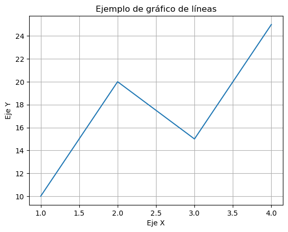
2.5.4 - Modelo orientado a objetos
Matplotlib también permite trabajar mediante un enfoque orientado a objetos, más flexible y recomendable en aplicaciones más complejas.
import matplotlib.pyplot as plt
fig, ax = plt.subplots()
ax.plot(x, y)
ax.set_title("Ejemplo con modelo OO")
ax.set_xlabel("Eje X")
ax.set_ylabel("Eje Y")
ax.grid(True)
plt.show()
- fig representa la figura.
- ax representa el eje donde se dibuja el gráfico.
- La personalización se realiza mediante métodos del objeto ax.
Este enfoque es más fácil de gestionar (escalable) cuando se trabajan múltiples gráficos o configuraciones avanzadas.
2.5.5 - Personalización de gráficos en Matplotlib
2.5.5.1 - Colores, estilos de línea y marcadores
Se pueden personalizar mediante parámetros en los métodos de representación (plot, scatter, bar, etc.).
import matplotlib.pyplot as plt
x = np.array([1, 2, 3, 4])
y = np.array([10, 20, 15, 25])
plt.plot(
x, y,
color="red", # Color de la línea
linestyle="--", # Estilo de línea
linewidth=2, # Grosor
marker="o", # Marcador
markersize=8 # Tamaño del marcador
)
plt.show()
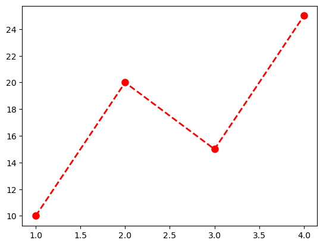
Parámetros habituales:
- Estilos de líneas
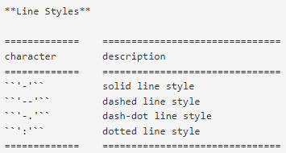
- Estilos de marcadores
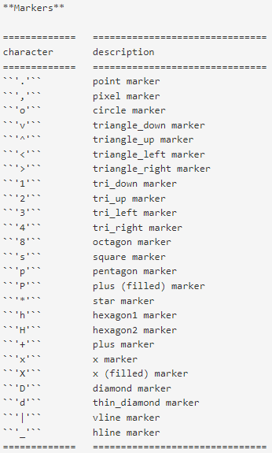
- Estilos de colores
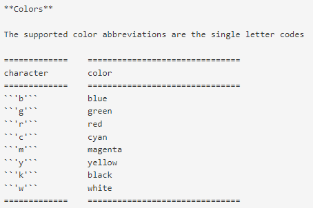
2.5.5.2 - Título, leyendas, ejes y tamaño de gráfico
- Tamaño del gráfico (figsize) El tamaño se define al momento de crear la figura. Se expresa en pulgadas (ancho, alto).
-
Títulos y Etiquetas de Ejes Entre (muchos) otros se puede usar title, xlabel e ylabel. Admiten parámetros como fontsize, fontweight, color, fontdict (diccionario con los parámetros anteriores) o loc (location,
right,leftocenter).- plt.title(): Define el título principal.
- plt.xlabel(): Etiqueta el eje horizontal (X).
- plt.ylabel(): Etiqueta el eje vertical (Y).
- Leyendas
Representar varias series en una misma gráfica suele ser bastante habitual, por lo que será necesario identificarlas con una leyenda.
2.5.5.3 - Rejilla
- Control de rejilla
La función plt.grid() permite añadir una cuadrícula al fondo del gráfico. Por defecto aparecerá en un gris suave en ambos ejes.
2.5.5.4 - Valores de los ejes
Las funciones xlim e ylim permiten delimitar los valores mínimo y máximo de cada eje (en un gráfico bidimensional).
2.5.5.5 - Ejemplo completo
import numpy as np
import matplotlib.pyplot as plt
x = np.array([1, 2, 3, 4])
y = np.array([10, 20, 15, 25])
x1 = x + 5
y1 = y[::-1]
plt.plot(
x, y,
color="red", # Color de la línea
linestyle="--", # Estilo de línea
linewidth=2, # Grosor
marker="o", # Marcador
markersize=8, # Tamaño del marcador
)
plt.plot(
x1, y1,
color="blue", # Color de la línea
linestyle="--", # Estilo de línea
linewidth=2, # Grosor
marker="v", # Marcador
markersize=8, # Tamaño del marcador
)
# Declarar las fuentes que se usaran en el grafico
font1 = {'family':'serif','color':'blue','size':14}
font2 = {'family':'serif','color':'darkred','size':11}
font3 = {'family':'serif','size':8} # para legend
# Titulos, ejes y leyendas.
plt.title("Personalización básica", fontdict=font1, loc="left")
plt.xlabel("Valores de X", fontdict=font2)
plt.ylabel("Valores de Y", fontdict=font2)
plt.legend(["Esto es una leyenda", "Esto es otra leyenda"], prop = font3, labelcolor='linecolor')
# Rejilla
plt.grid(
visible=True, # Visible
axis='y', # Solo líneas horizontales por defecto 'both'
color='gray', # Color de la línea
linestyle='--', # Línea discontinua
linewidth=0.5, # Grosor fino
alpha=0.7 # Un poco de transparencia
)
# Limites de la gráfica
plt.xlim(-1, 10)
plt.ylim(8, 27)
# Pintar la gráfica
plt.show()
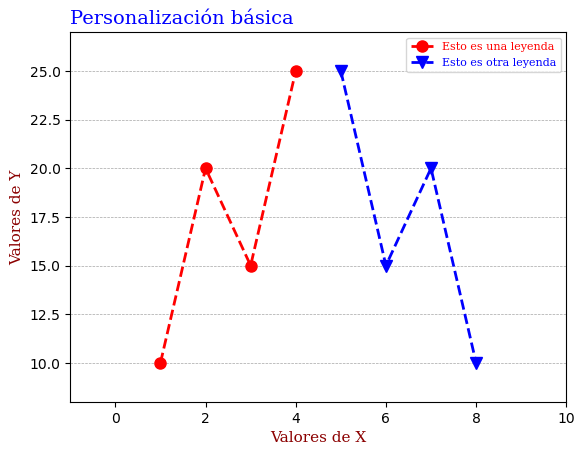
2.5.5.6 - Estilos predefinidos de Matplotlib
Podemos dar formato a los gráficos de forma simple usando el paquete de estilos de matplotlib.
Para usarlos, utilizaremos style.use('nombre_del_estilo') que declararemos antes de los objetos de pyplot.
import numpy as np
import matplotlib.pyplot as plt
from matplotlib import style
# Definir los estilos a utilizar
style.use('grayscale')
x = np.array([1, 2, 3, 4])
y = np.array([10, 20, 15, 25])
x1 = x + 5
y1 = y[::-1]
...
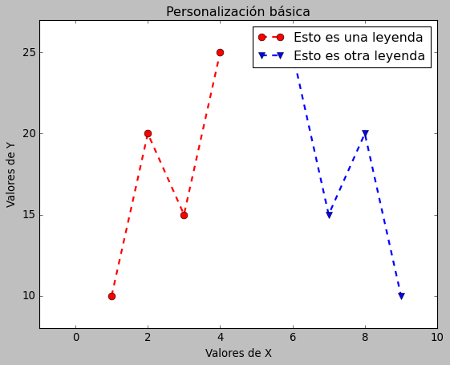
Nota:
Para obtener el listado de estilos disponibles, usaremos plt.style.available.